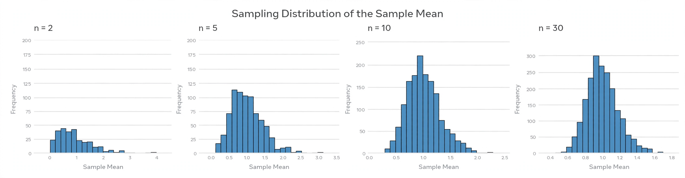

Central limit theorem

[Image: Histograms of sample means from several distributions becoming bell-shaped as sample size increases]
The central limit theorem states that, under mild conditions, the sum or average of many independent random variables tends toward a normal distribution — the familiar bell curve — regardless of the shape of the original distribution.
It is one of the most important results in statistics: it explains why measurement errors, heights, and sample means so often look Gaussian, and it justifies the normal approximations used throughout inference, from opinion polls to quality control.
History
Abraham de Moivre derived an early version in 1738 for coin tossing, and Pierre-Simon Laplace gave a general form; the modern rigorous theorem was established in the early 1900s by Aleksandr Lyapunov and Paul Lévy, among others.
Related results such as the law of large numbers describe where averages settle; the central limit theorem describes the shape of their fluctuations around that limit.